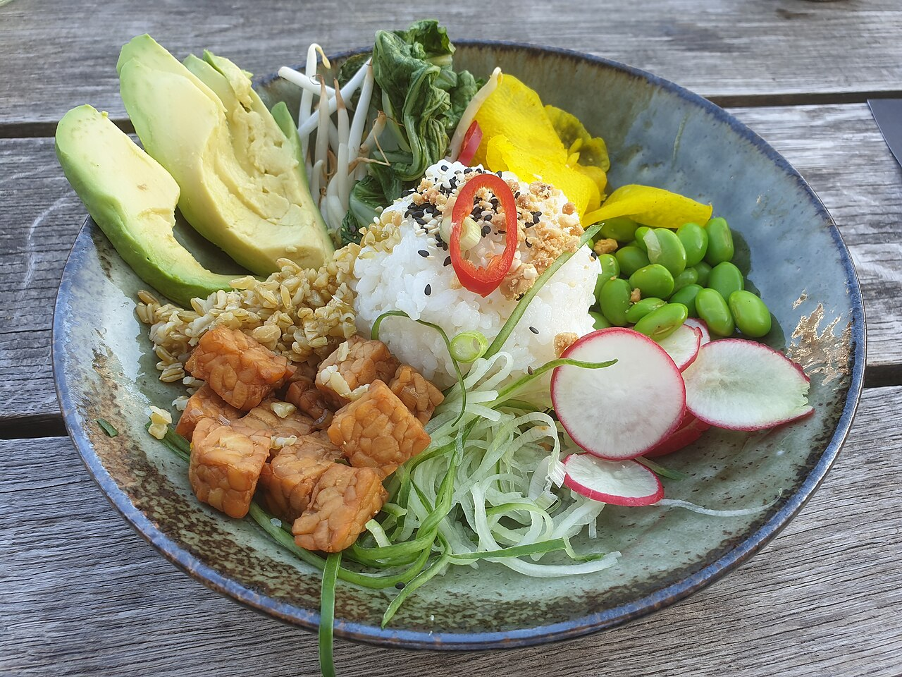
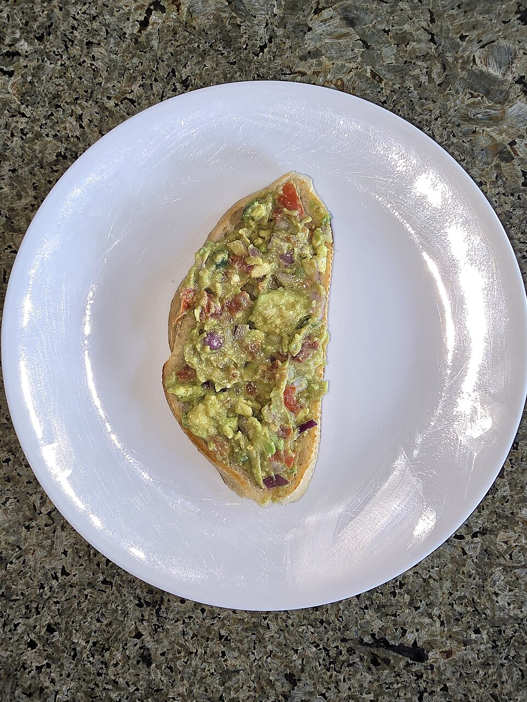
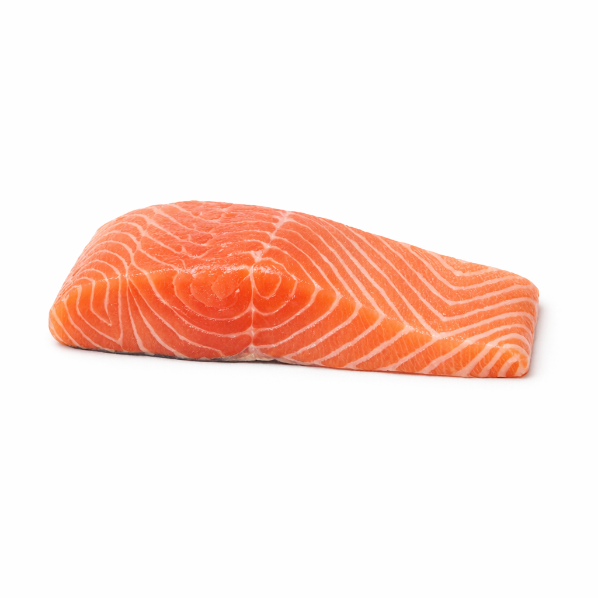
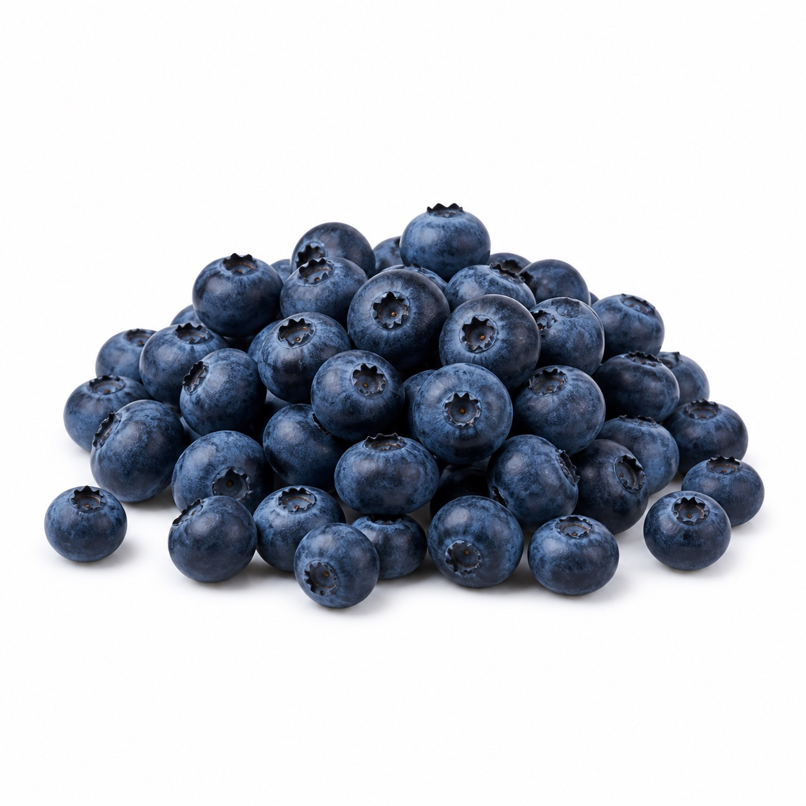

Latest post
Green recovery bowl with citrus tahini
A boho-style plate with greens, quinoa, avocado, chickpeas, and a bright sauce. It is rich in fiber, plant protein, minerals, and healthy fats.
Explore ingredientsHealthy recipes by Tilman Resch




Latest post
A boho-style plate with greens, quinoa, avocado, chickpeas, and a bright sauce. It is rich in fiber, plant protein, minerals, and healthy fats.
Explore ingredients